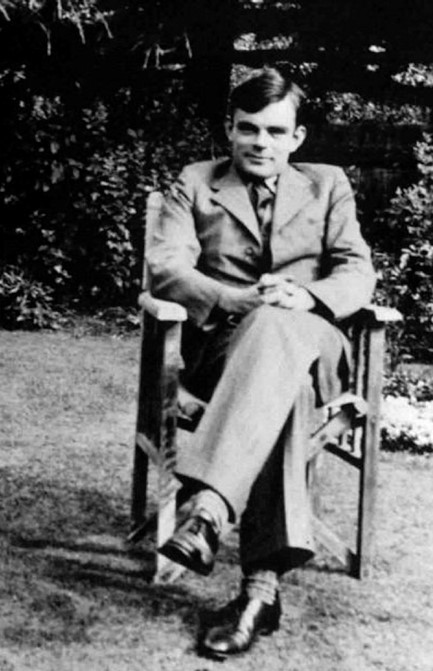
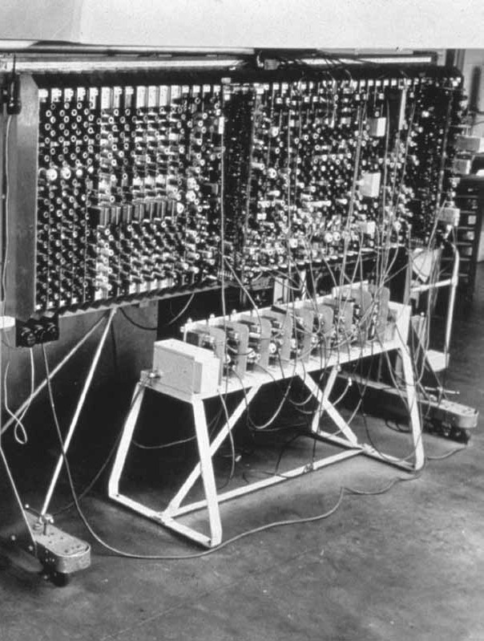
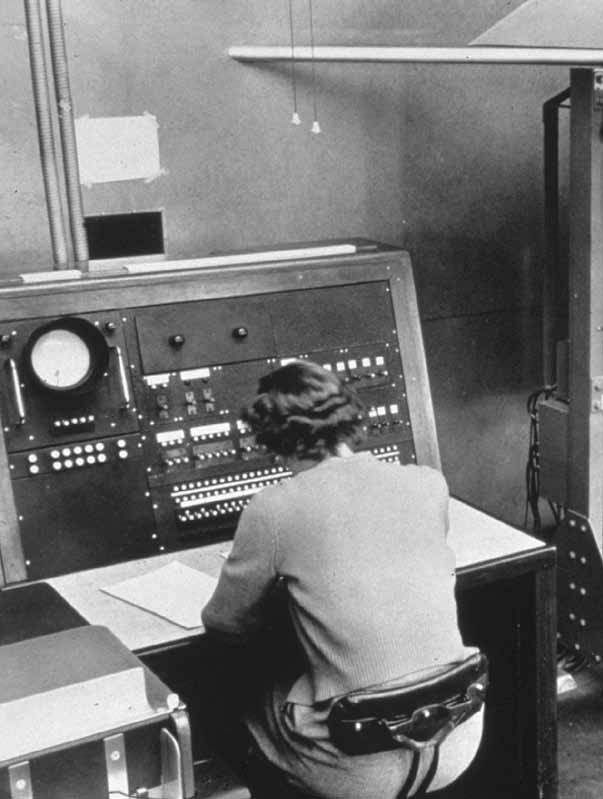
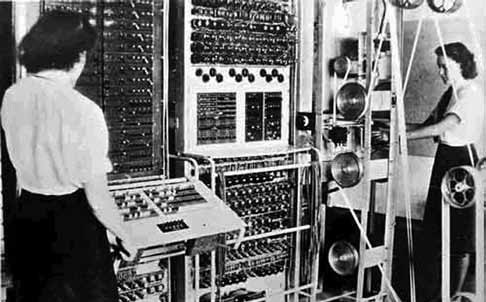
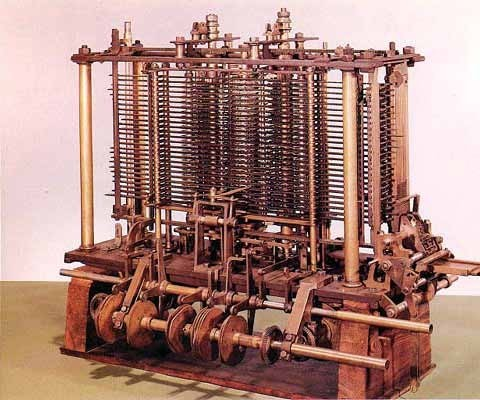

Este año se conmemoraron 109 años del nacimiento de Alan Mathison Turing, quien nació el 23 de junio de 1912, en Paddington, Londres. Para muchos, el matemático británico es simplemente conocido por la llamada prueba de Turing, la cual es simplemente un criterio para intentar establecer si una computadora puede definirse como pensante, como inteligente. Pero Alan Turing hizo grandes contribuciones en muchísimos campos de la ciencia. De hecho, si tuviésemos que definir a Turing en pocas palabras, tendríamos que decir que él es el padre de la ciencia de la computación.
Sin embargo, la educación que Turing recibió en sus primeros años no podía suponer que se convertiría en uno de los más importantes científicos. La vida de Alan Turing no tenía visos de ser especial, y de hecho la ciencia era algo así como una actividad extracurricular. Sin embargo, un libro que le dieron de niño, Natural Wonders Every Child Should Know, de Edwin Tenney Brewster (1912), causó una profunda influencia en él. Sus intereses científicos hacían temer que sería rechazado en la escuela pública inglesa. No obstante esto, entró a la escuela Sherborne, en donde pronto el director de la misma reportaría sobre Turing: “Si su ambición es convertirse en un científico especialista, está perdiendo su tiempo en la escuela pública”.
Ya a los 16 años, Turing mostraba un entendimiento superior de la teoría de la relatividad. En ese tiempo conoció a Christopher Morcom, otro aventajado estudiante quien fuese su primer amor. Él le dio a Turing un período vital de compañía intelectual, la cual terminó abruptamente con la temprana muerte de Morcom en febrero de 1930. Este desafortunado hecho hizo meditar a Turing sobre la mente y la materia, y ahora sabemos por las cartas de Alan a la madre de Morcom que expresaba que la mente podía separarse de la muerte física. La cuestión lo hizo investigar más al respecto con los años, y apoyándose en el libro de A.S. Eddington, The Nature of the Physical World, se cuestionó si la teoría de la mecánica cuántica podría afectar el problema de mente y materia.

Alan Mathison Turing
En 1932, ya Turing tuvo acceso a los trabajos de Von Neumann sobre la fundamentación lógica de la mecánica cuántica. En ese entonces su homosexualidad quedó definida. El ambiente especial del King’s College, en Cambridge, le dio a Turing el sentimiento de tener por primera vez un hogar. Participó en el movimiento contra la guerra en 1933 y se hizo un pacifista bajo la influencia de su amante eventual James Atkins, un matemático que a la postre se dedicaría a la música.
En ese año, 1933, Turing tuvo contacto con el Principia Mathematica de Russell y Whitehead, quienes pugnaban por hallar en la lógica una sólida fundación para la verdad matemática, aunque en realidad ya había demasiadas preguntas sobre esta idea. Dos años antes, en 1931, Gödel ya ponía las bases de la incompletitud de las matemáticas, es decir, la existencia de verdades sobre los números que no pueden ser probadas por las reglas formales de la deducción.
En 1935, Turing aprendió en una conferencia que diese el topologista M.H.A. Newman, en Cambridge, que una pregunta incluso más importante, planteada por el famoso matemático Hilbert, aún estaba abierta. Era la cuestión de la decidibilidad, el Entscheidungsproblem. ¿Podría existir, al menos en principio, un método o procedimiento definido por el cual podríamos saber si una proposición matemática era demostrable? Para responder a esto, habría que definir primero qué queremos decir con la palabra método. Turing llegó a la conclusión que esto podría llevarse a cabo con un proceso metódico, en donde planteó una idea fantástica: que mediante un sistema “mecánico” podría expresarse el análisis en términos de una máquina teórica que fuese capaz de desarrollar una serie de operaciones elementales en símbolos en una cinta de papel. Turing dio argumentos convincentes con lo que él denominó un “método definido”. Incluso se atrevió a decir que este argumento se basaba en la transición en los estados de la mente cuando ésta desarrolla un proceso.

Esta idea, que conecta las instrucciones lógicas, la acción de la mente y una máquina que en principio puede tener cualquier forma física, que lee las instrucciones y ejecuta acciones sobre los símbolos que aparecen en una cinta de papel, es tal vez la contribución más importante de Turing. En términos modernos, este método definido es lo que denominamos ahora algoritmo.
En abril de 1936 mostró este resultado a Newman, pero curiosamente el matemático, especialista en lógica, Alonzo Church, llegó paralelamente a esa conclusión y se llevó los honores. Así entonces, el artículo de Turing On Computable Numbers with an application to the Entscheidungsproblem estaba obligado a citar a Church y su publicación se atrasó hasta agosto de 1936. Sin embargo, el enfoque de Turing era diferente al de Church. Este último se basaba en la naturaleza interna de las matemáticas mientras que Turing decía que el procedimiento en cuestión podía hacerse en el mundo físico. Finalmente toda esta discusión decantó en el concepto de máquina de Turing, que es el fundamento de la teoría moderna de la computación y de lo computable, lo cual no es poca cosa.
Alan Turing trabajó aislado de la escuela de la lógica de Church, en ese entonces en la Universidad de Princeton. Su concepto de la máquina de Turing hace un puente entre la lógica y el mundo físico, mente y acciones, lo cual cruzaba las fronteras convencionales. Su trabajo es tan importante porque plantea la idea de una máquina universal, es decir, una máquina que puede hacer cualquier cálculo mediante un esquema mecánico. Si hablamos en términos modernos, un programa de computadora es una máquina de Turing y la tarea mecánica de interpretar y obedecer al programa es lo que hace la computadora finalmente. Así, la máquina universal de Turing es el principio esencial de las computadoras: una máquina que puede hacer cualquier tarea definida por el programa adecuado.
Adicionalmente, la máquina universal de Turing (que es un concepto abstracto finalmente) explota la idea de lo que ahora conocemos como un programa guardado en la memoria de la máquina. Si consideramos que estas ideas las planteó Turing cuando ni siquiera había computadoras (1936), debemos concluir que sus ideas eran revolucionarias en todos sentidos.
En 1936, Turing pasó dos años en Princeton para realizar su doctorado. Trabajó en álgebra y teoría de números, en donde mostró que su definición de computabilidad coincidía con el de Church, y una extensión de sus ideas "lógicas ordinales" fue lo que le dio su tesis para el grado de doctor. Este problema es tal vez su trabajo matemático más profundo y difícil en donde, incluso, lo conecta con la pregunta sobre la naturaleza de la mente.

Tablero de control general y chasis de la computadora ace, 1950
En 1938 se le ofreció a Turing una cátedra en Princeton, pero decidió regresar a Cambridge. Los años 1938 y 1939 los pasó en el King’s College becado, como lógico y especialista en teoría de números. De manera inusual para un matemático, Turing se inscribió en las clases de Wittgenstein sobre filosofía de las matemáticas. De forma inusual, de nuevo, se embarcó en la construcción de una máquina mecánica, con una serie de engranes, para calcular la función Zeta de Riemann. Secretamente formó parte del departamento criptoanalítico británico. Se buscaba descifrar los mensajes alemanes, encriptados con una máquina llamada Enigma. No hubo progresos significativos hasta que una serie de ideas vitales e información, que llegaron en julio de 1939, desde Polonia, le ayudaron a resolver muchísimos problemas y a descifrar lo que hacía la máquina alemana.
Con la declaración de la guerra por parte de los británicos, Turing trabajó de tiempo completo en los cuarteles británicos en Bletchley Park. Ahí pudo generalizar el trabajo de los polacos y llegar a descifrar los mensajes de Enigma. Otro matemático de Cambridge, W.G. Welchman, hizo algunas contribuciones importantes en el tema, pero el factor crítico para poder leer los mensajes alemanes fue gracias a la sutil deducción lógica de Turing.
Para 1942, Turing era el genio local en Bletchley Park. Contaba historias muy graciosas y era conocido por todos. A Joan Clarke, una estudiante, le pidió matrimonio, cosa que ella aceptó, pero entonces se retractó confesándole su homosexualidad. Turing era consultado para todo tipo de temas cuando trabajaba en resolver el problema de la máquina Enigma. Ahí nació Colossus, una serie de máquinas que empezaron a funcionar justamente un día antes del Día D, y demostró la posibilidad de las computadoras electrónicas. De hecho, el matemático trabajó mucho tiempo en aprender electrónica con lo que, se especula, esperaba crear su propio sistema de texto secreto, el cual trabajó con uno de sus asistentes, Donald Bayley. Pero quizás tenía esperanzas más ambiciosas, como precisamente crear una máquina que hiciese cálculos, que fuese computable. De alguna manera buscaba la máquina universal de Turing y probó entonces que bien podría considerarse, incluso, el inventor de la computadora moderna.

Computadora Colossus, 1944
En 1944, Turing tenía tres ideas únicas:
- Su propio concepto (1936) de la máquina universal.
- La velocidad y confiabilidad de la tecnología electrónica.
- La ineficiencia en diseñar diferentes tipos de máquina para diferentes procesos lógicos.
Al combinar estas ideas era claro que, en principio, la computadora moderna era factible. Turing agregó una idea asombrosa para su tiempo: que la máquina universal pudiese adquirir y exhibir las facultades de la mente humana. Incluso, en 1944 Turing le confió a Bayley su idea de construir un cerebro.
Diseñar una computadora en esos años estaba muy limitado por los componentes electrónicos y por la tecnología imperante de ese momento, pero la idea de lo que podía hacer la máquina que Turing había bosquejado era visionaria. Proyectó trabajos en álgebra, decodificación de mensajes, manejo de archivos e incursionó en escribir un programa que jugara al ajedrez. En 1947, Turing tenía ya un código abreviado de instrucciones que bien pudiesen considerarse el inicio de los lenguajes de programación.
En octubre de 1947, regresó al mundo académico en Cambridge y se abocó a estudiar neurología y fisiología. De ahí nacieron escritos pioneros de lo que ahora llamaríamos redes neurales en donde ya habla de poder exhibir aprendizaje. Este documento, sin embargo, fue interno y jamás se publicó mientras Turing vivió.
El regreso de Turing a la escena académica le hizo regresar a un confortable grupo de amigos. Aunque nunca fue un secreto su homosexualidad, ahora era más abierto en este sentido e incluso su estudiante de matemáticas, Neville Johnson, fue su amante.
Esos años fueron muy fructíferos. En mayo de 1948, se le ofreció el trabajo de director en el laboratorio de computación, en la Universidad de Manchester, y aunque no participó activamente en la construcción de computadora alguna, organizó la programación que debían aprender los ingenieros. Para ese entonces revisó sus cálculos de la función Zeta, trabajó en álgebra de la teoría de grupos y en 1950 publicó uno de sus mejores trabajos: Computing Machinery and Intelligence, que apareció en la revista Mind.

Máquina analítica de Charles Babbage, antecedente de la computadora
En marzo de 1952, fue arrestado por sus actividades homosexuales en Manchester, ilegales en Gran Bretaña en ese tiempo. Turing siempre dijo que no veía nada de malo en sus acciones. Sin embargo, en lugar de ir a la cárcel, aceptó un tratamiento de estrógenos para neutralizar su libido.
Turing fue encontrado muerto el 8 de junio de 1954. Murió por la ingesta de cianuro. Se halló una manzana sin terminar al lado de su cama. Su madre creyó siempre que se envenenó de manera accidental después de un experimento químico de un aficionado, pero parece ser que es más creíble lo que el propio médico forense dictaminó: suicidio.
Turing fue un visionario en muchísimos campos de la ciencia. Es difícil saber qué otras contribuciones hubiese hecho si no lo hubiese sorprendido la muerte a tan corta edad.